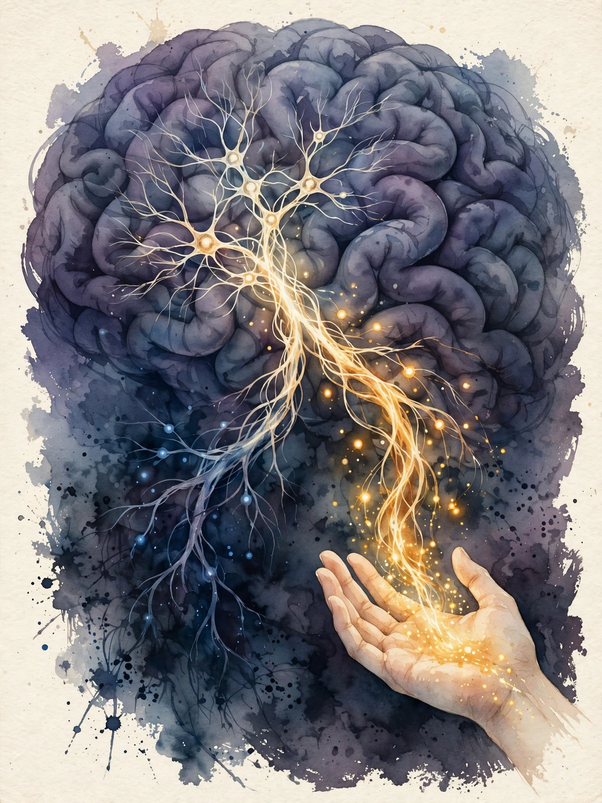
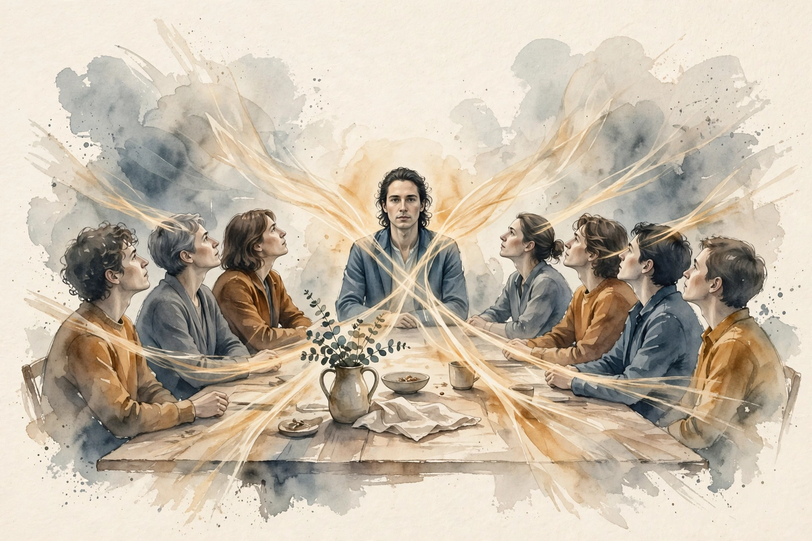

Source fact A claim from the episode transcript or the show's published chapter list. Interpretation My read on what it means. Chapter times come from the episode's own YouTube chapter list.
The Amygdala Is a Fork, Not a Fear Button

Source fact The textbook story says amygdala equals fear. Tye's lab says the amygdala equals valence: good or bad, approach or avoid. The evidence starts with Kluver-Bucy lesions. Monkeys with amygdala damage did not become fearless daredevils. They became flat: nothing tagged as good or bad, so nothing was worth approaching or avoiding.
Source fact The structure has about 13 subnuclei, each a specialized station. The basolateral amygdala, the BLA, uses glutamate, the brain's main excitatory signal. Reward and fear travel through separate projections out of the BLA. Tye describes presenting this at a Gordon conference and meeting resistance: the field was not ready to let the amygdala do reward.
Source fact Patient SM is the human proof. With amygdala damage, she showed no fear of frightening faces, yet a CO2 inhalation challenge triggered full panic. The amygdala evaluates. The body panics on its own hardware. Evaluation and arousal are separable.
The valence fork
Hover each branch for what happens.
Source: Huberman Lab, Dr. Kay Tye, 00:06:40. The fork model as presented on air.
Novelty First, Habituation Fast
Source fact The amygdala answers novelty first and habituates fast. First exposure gets the big response. Repetition quiets it. Every first impression you make rides this curve: loud at hello, fading by the third meeting unless you refresh it.
Hunger Rewrites the Fork
Source fact The amygdala carries ghrelin receptors. Ghrelin is the hunger hormone. When hunger rises, the fork's priorities flip: fear and caution outrank reward and exploration. A hungry brain is a defensive brain. (Caption garble note: the transcript renders "ghrelin receptors" as "gin receptors". Corrected against the episode's content.)
Source fact The Danziger 2011 study, cited in the episode: parole grant rates started near 90 percent after a meal, fell toward 10 percent before the next meal, and the pattern repeated through the day. Justice wore a lunch schedule. The mechanism in this episode's terms: hunger flipped the valence fork toward avoid, and avoid votes no.
Parole grants across the meal schedule
The Danziger 2011 pattern, as cited on air. Illustrative bars, not the paper's exact figures.
Source: Huberman Lab, Dr. Kay Tye, 00:20:06, citing Danziger, Levav, and Avnaim-Pesso (2011). Bars are illustrative of the cited pattern.
Source fact Top-down versus bottom-up processing frames the same idea. Bottom-up is the dog behind the fence: raw signal, barking, threat. Top-down means knowing the fence holds: context calms the fork. Charisma, in neural terms, means giving other people's top-down systems enough safety signal to quiet their bottom-up alarms.
Toy: the hunger audit
Rate your hunger before the next hard conversation or decision. The toy applies the fork.
The Loneliness Neurons
Source fact Tye's lab found the dorsal raphe nucleus dopamine neurons act as loneliness neurons. The Matthews serendipity story: control animals injected with saline were supposed to be the neutral baseline, but saline meant handling and isolation, and the isolation itself drove the effect. The controls were not neutral. There is no neutral in social neuroscience.
Source fact The DRN finding has a twist: the signal is aversive yet pro-social. It feels bad and it drives you toward people. Two reasons to eat: hunger feels bad and food tastes good. Loneliness works the same way. The bad feeling is the feature. It moves you.
Source fact Acute isolation rebounds toward people. Chronic isolation curdles into aggression. Tye's pandemic story is the personal version: free-fall, then the garden, then a new baseline. The band-aid question she poses: do you rip off isolation fast with intense reconnection, or peel slowly. The episode leaves it open, because the answer depends on the chronicity.
Source fact The cucumber and grape inequality experiment, cited in the episode: monkeys given cucumber while watching another get grapes rejected the cucumber. Fairness is computed socially, not absolutely. Your rewards are always measured against the room.
Empathy's Enemy: Competition
yum yuck and me
Marcus Meister, as quoted by Kay Tye, 01:18:26
Source fact Definition from the episode: empathy means understanding what someone feels plus taking some of it on. It is not contagion. Contagion means catching the feeling without understanding it. Empathy means understanding with a measured dose of sharing.
Source fact The finding that matters for charisma: empathy correlates inversely with competitor framing. The reality TV example: once the brain files someone as a competitor, empathy circuits throttle down. You cannot empathize with someone you try to beat. The practical rule: never frame a room as a contest if you want connection in it.
Source fact Marcus Meister's yum-yuck-me quip, quoted in the episode, is the joke version of a serious claim: approach, avoid, or self. Most social decisions reduce to those three bins.
Toy: the competitor reframe
Name someone you currently file as a competitor. The toy rewrites them as a counterpart.
Experiential Statistics
Source fact The at-risk kids food story makes the developmental case. Tye describes working with deprived kids who grabbed more than their share at meals. One boy told her plainly: you cannot hit us, so I will take what I want. His experiential statistics, a lifetime of scarcity and punishment, set his fork to adversary mode. Over three and a half weeks of reliable abundance, the kids learned to share. The fork is trainable, but the training data is experience, not argument.
Abundance Versus Scarcity: A Mindset With a Circuit
Source fact Having abundance does not create an abundance mindset. The episode states this twice because it matters. The mindset is the fork's default setting, written by experiential statistics. Scarcity childhoods write avoid defaults. Abundance childhoods write approach defaults.
Source fact The comparison engine explains why the mindset matters socially. A large part of the brain tracks relative rank: where you stand, who is above, who is below. Comparison is conserved because rank once predicted survival. In a world where most survival needs are met, the engine keeps running on empty, manufacturing status threats out of nothing.
Social Rank: Identity Versus Position

Source fact Rank is specific to linear hierarchies. Many real groups run flatter or dynamic hierarchies: the skateboard alpha differs from the soccer alpha. Dynamic hierarchies, where leadership follows competence per task, are presented as the healthy form.
Source fact The hard experimental problem: separating identity neurons from rank neurons. Tye's Obama example: if a neuron fires for Barack Obama the president, does it fire for Obama the ex-president, or for whoever is president now? The rehouse experiment tests it: take ranked animals, regroup all the alphas together, all the betas together, and watch new ranks form. Early results: intermediates take longest to sort out, dominants fight it out fast, subordinates settle quickly.
Source fact The reward-competition study is the showpiece. Four cagemates with stable ranks compete for one reward. Prefrontal cortical firing predicts the next trial's winner above chance, starting 30 seconds before the trial. Dominants show flat, steady decoding: they are engaged or not, and they do not watch the subordinate. Subordinates show a spike near the cue: they watch the dominant, wait for inattention, then move. The Mad Men scene, quoted in the episode, is the human version. Don Draper's line is not cruelty. It is the attentional signature of rank.
Attention flows downhill
Hover each row for the decoding pattern.
Source: Huberman Lab, Dr. Kay Tye, 01:37:22. The reward-competition findings as presented on air.
Source fact The mentorship lesson Tye draws: good mentors train trainees to act like principals early. Her graduate advisor's absence forced independence. The threshold moment of science, doing an experiment nobody told you to do, is the moment the subordinate stops watching and starts acting.
Psychedelics: Lability of States, and the Scientist
everybody can feel it
Kay Tye on workaholism, 02:06:28
Source fact Tye's psychedelic research asks mechanistic questions. What is a hallucination at the cellular level: changed signal-to-noise plus pattern completion, or something else. Do psychedelics change the number of brain states or the transition probabilities between them. Her lab models prefrontal activity as a hidden Markov model: hidden states, loosely called moods, with statistics of behavior per state. The question is whether psilocybin loosens the transitions, letting a stuck brain move from sad to okay.
Source fact The self-other distance measure is the social payoff. In dimensionality-reduced neural activity, self and other have a quantifiable distance. Psychedelics may shrink it. The conflict task, reward cue versus shock cue presented together, tests whether the drug shifts valence assignment in the gray zone.
Source fact Tye's path runs through yoga instruction, backpacking Australia, and semi-professional breakdancing, including halftime shows for the Golden State Warriors. Her work-life balance advocacy comes from data: as a workaholic postdoc she withered into an empty shell, and everyone around her felt it. Impostor syndrome lasted about 20 years, lifting around 2021.
The episode in seven lines
- The amygdala is a valence fork: approach or avoid, tagged per stimulus.
- Novelty fires it loud. Habituation quiets it. Refresh first impressions.
- Hunger flips the fork to avoid. Parole grants ran near 90 percent after meals, near 10 percent before.
- The loneliness signal feels bad and drives approach. The bad feeling is the mechanism.
- Competitor framing kills empathy. Never frame the room as a contest.
- The fork learns from experience, not argument. Three and a half weeks of abundance rewrote scarcity defaults.
- Attention flows downhill. Stop watching, start acting, become a principal.
Distilled from Huberman Lab, Dr. Kay Tye: The Biology of Social Interactions, Feb 2024. Full episode: youtube.com/watch?v=V0Sdgn0_kFM. Chapter times from the episode's own chapter list.